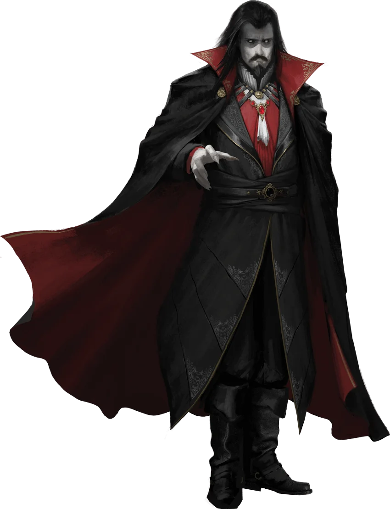

Etharis
![[Imagem do Mapa de Etharis]](https://raw.githubusercontent.com/TheGiddyLimit/homebrew-img/main/img/GrimHollowCG24/002-map-01.001-etharis-dm.webp)
O Mundo está Quebrado
Etharis é um mundo à beira da destruição. Os deuses estão mortos, o medo e a superstição são abundantes, e cada reino é assolado por cataclismos que ameaçam colapsar a civilização inteira.
As realidades sombrias de Etharis tornam o reino incrivelmente perigoso. O povo comum acovarda-se nos seus assentamentos frágeis enquanto monstros vagueiam livremente pela terra. Viajar entre centros populacionais acarreta riscos. Mesmo dentro de muralhas de relativa segurança, a ganância e o desespero fomentam um tipo diferente de mal que ataca os bondosos e incautos.
Em tempos de tanta dificuldade, os pecados do ódio, preconceito e crueldade elevam-se frequentemente acima das virtudes mais gentis. Etharis está cheia de pessoas que sonham com um amanhã mais brilhante mas estão muitas vezes dispostas a cometer atos terríveis hoje para sobreviverem mais facilmente à noite. Criar e alimentar um exército requer impostos. Um rei não pode ser um soberano generoso enquanto defende o seu reino de monstros.
Os Deuses Estão Mortos
O desaparecimento dos deuses é o evento que muitos culpam pelo estado atual de Etharis. Poucos conhecem a verdade da sua queda, mas todos estão cientes de que rezar aos deuses não traz ajuda nem alívio. A magia divina que outrora oferecia cura e proteção diminuiu, e poucos restam que possam despertar o seu poder.
A existência dos personagens, especialmente aqueles que detêm o poder da magia divina, é uma anomalia em Etharis. Eles podem ser tratados com temor, mas são igualmente propensos a serem vistos como fraudes ou aberrações perigosas. Sem uma estrutura eclesial organizada por trás destes personagens, não existe confiança ou respeito implícito. Se vistos como um profeta único dos Arquiserafins, as reações podem variar de adoração cultista a repulsa, hostilidade ou descrença.
Grupos de poder estão igualmente propensos a querer matar ou desacreditar alguém que empunha o poder dos deuses mortos. Ameaças contra o poder secular não são toleradas por aqueles com tanto a perder. A morte dos deuses tem consequências graves: a cura não está prontamente disponível em santuários e a ressurreição é uma quase impossibilidade. Em vez disso, aqueles que o podem pagar dependem das ciências médicas de boticários e cirurgiões.
A Magia é Desconfiada
Conjuradores em Etharis encontram-se como alvos de ódio e desconfiança. Uma inquisição mágica surgiu nas Províncias Castinellas, burocracias tentam regular e controlar a vida dos magos noutros locais, e multidões perseguem aqueles que o povo comum pode culpar pelas suas desventuras. Onde antes mergulhavam nos mistérios do universo, agora feiticeiros e os seus semelhantes devem procurar garantir a sua própria sobrevivência.
Lançar chamas ou manipular mentes de forma óbvia para salvar uma vila provavelmente resultará em ser evitado no rescaldo, ou até atacado pelos habitantes. Quando, na mente de um camponês ingénuo, a magia é a ferramenta de demónios e bruxas, ser salvo pela magia não é salvação nenhuma. Como Mestre, podes decidir a extensão em que cada pessoa ou local desconfia da magia; desde que os jogadores entendam que o tema está presente, é responsabilidade deles geri-lo.
A Humanidade é Falha
Etharis é povoada pelos desesperados e temerosos — aqueles que olham por si mesmos, muitas vezes em detrimento dos outros. Seja um nobre astuto a assassinar rivais num jantar ou um agricultor a roubar medicamentos vitais do vizinho idoso para tratar o seu próprio filho doente, as pessoas raramente recebem uma escolha justa entre decência e sobrevivência.
Em suma, Etharis é o lar dos intrigantes, dos gananciosos e dos cruéis. Mesmo aqueles que evitariam tais males podem ser forçados a eles pelas circunstâncias. Mestres devem lembrar que a ajuda não é dada livremente por estranhos. Suborno, intimidação e chantagem são linguagens melhor compreendidas num mundo de paranoia, onde apelos à misericórdia falham. O que é uma mão amiga numa campanha tradicional deve ser olhado com suspeita em Grim Hollow; um pouco de veneno no guisado de um estalajadeiro pode render grandes riquezas.
Esperança Dentro da Escuridão
Apesar das circunstâncias terríveis, a esperança perdura. Pode estar dispersa e assaltada por todos os lados, mas não foi extinta. Um agricultor resiste contra soldados para dar tempo à família de fugir. Um mercador entrega pão a um mendigo. Um paladino, o último da sua ordem, continua a sua busca para livrar o mundo de um demónio. Pequenos atos de bondade e bravura destacam-se contra o fundo sombrio. Num cenário onde o bem raramente vence o mal, as vitórias duramente conquistadas merecem celebração.
Os Reinos de Etharis
Impérios e Sagas do Continente
Etharis é um vasto continente ocupado por impérios e antigos reinos. As culturas são diversas e profundamente enraizadas. Cada nação foi moldada por seu povo, sua história, seus grupos de poder, sua relação com a magia, eventos cataclísmicos e soberanos vizinhos.
Nenhum reino é singular em sua cultura ou valores. Cada um representa um gênero diferente de fantasia sombria e terror e, portanto, diferentes temas são melhor explorados em cada um deles. Uma única região pode abrigar uma campanha inteira, ou você pode vivenciá-las todas através de suas aventuras viajando pelo continente.
A história, a cultura e os temas de cada região são explorados em profundidade neste livro. Abaixo, apresentamos pequenos vislumbres desses universos. Não há uma ordem correta para vivenciá-los, basta começar por onde sua inspiração o levar.
Outrora um farol da civilização que estendia seu território a todos os reinos, o Império Bürach desmorona e apodrece, agarrando-se agora às suas províncias centrais como um velho leão devastado por uma vida de feridas e doenças. Embora ainda formidável em riqueza e poder, aqueles que vivem dentro do império pressentem diariamente que o fim se aproxima
Histórias de horror cósmico se encaixam perfeitamente no Império Bürach, onde as esperanças de um amanhã melhor são obscurecidas por uma ruína iminente e inevitável. Uma sombra assombra o Império Bürach, uma criatura de tamanho colossal cuja mera presença distorce e corrompe a terra ao seu redor. Essa besta foi vista por muitos, mas nunca verdadeiramente vista, pois é tanto um arquétipo quanto um ser mortal. Mas os horrores que surgem em seu rastro são inegáveis.
As províncias que compõem os remanescentes do Império Bürach testemunham o iminente colapso de sua liderança e sociedade, e seus líderes se posicionam para se beneficiar desse colapso — e talvez até mesmo busquem acelerá-lo. Seja por meio de guerra, rebelião, doença ou cultos a deuses estranhos, o império pode estar testemunhando seus últimos dias.
O Reino de Charneault é um reino de beleza incomparável. Escondido atrás da floresta mística do Labirinto do Bosque, encontra-se uma terra de colinas verdejantes, vales envoltos em névoa e inúmeros rios caudalosos. Charneault é patrulhado por cavaleiros virtuosos. Uma profunda conexão com a natureza está intrinsecamente ligada à cultura de Charneault, herdada dos elfos que primeiro se estabeleceram nessas terras idílicas.
No entanto, toda essa beleza não passa de uma ilusão. As histórias contadas no Reino de Charneault são semelhantes aos contos de fadas infantis — narrativas fantasiosas que disfarçam a verdadeira brutalidade e o perigo em seu âmago. Os contos de fadas que estão no coração de Charneault são muito mais sombrios e sinistros.
Seres feéricos caprichosos, adorados por um lado e temidos por outro, tomam o que querem sem medo de represálias. Uma névoa corruptora encobre suas atividades e dizima tudo o que toca, sem fim à vista. Os contos e aventuras de Charneault são verdadeiros pesadelos — o horror sobrenatural de criaturas feéricas amorais cometendo atos indescritíveis de crueldade e dor contra criaturas mortais, apenas para ver o que acontece.
A fé une as Províncias de Castinella . Fervorosamente devotados aos éditos dos Arquiserafins, os habitantes de Castinella reconhecem os males que podem ser cometidos por meio de atos de magia arcana — e fazem tudo ao seu alcance para impedir que tais atos aconteçam. Se algumas pessoas inocentes ou de bom coração forem mortas ou torturadas no processo, isso é considerado um pequeno preço a pagar em nome da segurança.
Castinella é um reino onde a religião transformou a população, antes bem-intencionada, em verdadeiros monstros. A ignorância, a desinformação e a devoção cega da Inquisição Arcanista e seus seguidores desencadeiam campanhas de terror psicológico, onde basta uma acusação infundada para transformar a vida de uma pessoa inocente em um pesadelo. E a presença de monstros reais que precisam ser combatidos significa escolher entre usar a magia que mata monstros ou esconder a magia que o levará à morte como um deles.
Bem ao norte, na extremidade congelada do continente, encontra-se a terra natal dos Clãs Valikanos . Diariamente, o povo resistente que habita Valika precisa suportar o ambiente implacável, elementais enfurecidos e os conflitos sangrentos que irrompem entre os diversos clãs.
A vida é curta entre os Grandes Clãs. Contudo, o legado de grandes heróis e chefes de clã perdura através das gerações, por meio das sagas que os Valikans contam sobre sua gloriosa história. Assim como as diversas estações do ano, a honrada e habilidosa bravura dos Valikans é uma das faces da mesma moeda. A outra, como o rigoroso inverno, é a sobrevivência a qualquer custo, incluindo atos terríveis e egoístas para garantir a sobrevivência do clã. Esses atos incluem saquear assentamentos e capturar prisioneiros — alguns dos quais podem ser sacrificados.
As duas cidades-estado de Liesech e Morencia não são nações plenas, mas são, no entanto, distintas das demais áreas em termos temáticos, geográficos, políticos e sociais. Cada uma traz seu próprio sabor e sua própria atmosfera de horror para uma campanha.
Liesech é o caldeirão pútrido de doenças onde se originou a Varíola Chorosa. Seu povo tenta manter seu modo de vida mercantil enquanto seus amigos, familiares, colegas e até mesmo inimigos sucumbem à temida doença. Embora a doença tenha uma causa sobrenatural, seus efeitos são evidentes. O horror corporal e a corrupção inerentes a esse gênero não se manifestam apenas na doença em si, mas também nas ações, por vezes questionáveis, daqueles que tentam curá-la.
A doença de Morencia é social, não médica. Os gananciosos e ardilosos habitantes deste centro bancário e comercial sorriem e estendem uma mão enquanto a outra segura uma adaga envenenada. A fachada vibrante e efusiva de Morencia esconde segredos obscuros e cultos secretos que fariam qualquer coisa por uma réstia de poder e mais uma Moeda de Ouro.
O Império Ostoyano
![[Mesa de Guerra de Ostoya]](https://raw.githubusercontent.com/TheGiddyLimit/homebrew-img/main/img/GrimHollowCG24/028-04-004.ostoyan-war-table.webp)
Um Reino sem Sol de Sombras e Sangue
O sol jamais nasce no Império Ostoyan. Governado por uma aristocracia de vampiros e seus servos, a Corte Carmesim controla a nação com suas garras gananciosas, olhos aguçados e presas ainda mais afiadas.
Situada a leste da Espinha Cinzenta, Ostoya foi fundada séculos atrás por secessionistas Bürach — migrantes que fugiram do domínio autoritário do Império Bürach e dos decretos dos Guardiões da Lareira. Ostoya era uma nova terra que qualquer um podia chamar de sua. Contudo, nos últimos tempos, tornou-se um lugar tão fragmentado e infestado de monstros quanto seus primos Bürach do outro lado das montanhas ocidentais.
Das suas seis províncias, Raevo se separou do Império Ostoyan. Atualmente, trava uma guerra civil para defender o espírito de liberdade que fundou Ostoya. Raevo almeja expandir suas fronteiras para libertar outras províncias das garras sangrentas da Corte Carmesim.
Mesmo dentro das províncias leais à Corte Carmesim, o poder é ilusório. Os membros da Corte devem permanecer vigilantes para sufocar qualquer rebelião adicional em suas próprias regiões de soberania. Mais importante ainda, devem vigiar uns aos outros. As maquinações da nobreza são profundas e parecem ser tão sustentáveis quanto o sangue que bebem.
Para os cidadãos comuns, a vida em Ostoya é sombria e muitas vezes aterrorizante. Os camponeses trabalham a terra, que lhes é cedida por senhores imortais, e pagam dízimos exorbitantes sobre qualquer ínfima riqueza que consigam acumular. Mas o que a nobreza exige em troca de ordem social e proteção é muito mais valioso do que qualquer moeda. Todos os que são governados pela Corte Carmesim temem o imposto de sangue.
Há um ditado camponês ostoiano particularmente mórbido: "Só na morte seus trabalhos terminarão". Mas nem isso é verdade. Afinal, muitos dos mortos em Ostoya são forçados a continuar trabalhando sob as cordas sangrentas de seus mestres vampíricos.
Províncias de Ostoya
A província mais meridional do império está completamente subjugada pelo poder da Corte Carmesim. Sua população inclui aristocratas ricos e bajuladores que se prostram diante da autoridade da Corte. Eles anseiam por alguma medida de favor, ou mesmo por uma gota do sangue amaldiçoado de seus governantes. Abaixo deles estão os pobres e desesperados. Pessoas que lutam entre si pelas migalhas que lhes são atiradas da mesa nobre.
Fissuras que se estendem até a Cidade Subterrânea marcam a superfície de Soma, ondulando a partir da capital. Contudo, aqui o povo é o que menos consegue se defender. Heróis são raros e indesejáveis tão ao sul, onde poderiam ser vistos como uma ameaça à Corte Carmesim. Em vez disso, os plebeus precisam confiar em feiticeiros e soldados que aceitam o patrocínio dos vampiros em troca da proteção do gado mortal.
A guerra paira sobre Espinha Dorsal como uma nuvem de tempestade prestes a desabar. A província está eternamente presa entre a máquina de guerra do Império Bürach a oeste e a agitação civil alimentada pelas tensões entre Soma e Raevo.
Fallowheart é uma cidade simbólica, e Espinha Dorsaluma província importante. A região é o lar dos primeiros migrantes que fugiram da opressão de Büracher e se estabeleceram nas terras que se tornariam o Império Ostoyan. Inúmeras vezes, os ostoyans lutaram por sua liberdade em Estspine. A Passagem de Eliana, através da Espinha Cinzenta, é a única passagem larga o suficiente para a marcha dos exércitos de Büracher.
O povo de Fallowheart está dividido em suas lealdades. Alguns acreditam que seus ancestrais não sacrificaram suas vidas para derrotar o Império Bürach apenas para que as gerações futuras fossem governadas por uma forma diferente de tirania, uma tirania de trevas e derramamento de sangue. Outros, porém, sustentam que foi somente com a força da Corte Carmesim que Ostoya permaneceu independente do oeste.
A região é assolada por guerras secretas e intrigas, com ambos os lados cientes de que um conflito aberto poderia atrair o Império Bürach para uma invasão.
Terinima é o coração do Império Ostoyan. Antes da Queda das Trevas, era uma vasta planície de terras aráveis, ladeada por florestas a leste e oeste, e banhada pelo Grande Rio Arteriyan, que atravessa o centro de Terinima. Era o celeiro do resto do império, até o dia em que o sol desapareceu do céu.
Terinima continua sendo de grande importância para Ostoya e a Corte Carmesim. A província ainda produz o que pode para alimentar a população, o que é vital para os vampiros manterem sua própria fonte de sustento. Os terinimanos são gente simples, com poucas ambições além de vender a escassa colheita que conseguem cultivar e proteger suas famílias. Quando o chamado à rebelião ou à aventura os atinge, geralmente devido a uma tragédia ou circunstância, eles partem para Raevo ou Soma, normalmente passando por Crowsbend.
A capital de Teriniman é uma cidade mercantil movimentada. Trabalhadores qualificados, como ferreiros, sapateiros, herboristas e escribas, têm maior probabilidade de encontrar emprego aqui. Marinheiros e mercadores também são comuns em Crowsbend, frequentemente vindos de outros assentamentos.
Bezcodru é o domínio de carniçais famintos por carne, espíritos errantes e matilhas de caça de híbridos aterrorizantes de vampiro e lobisomem, conhecidos como fzeg. Todos esses monstros e muitos outros espreitam nas profundezas intrincadas da Floresta dos Natimortos. As fronteiras de Bezcodru começam e terminam na copa das árvores retorcidas e pálidas da floresta. Nem mesmo a luz da lua consegue penetrar a copa das árvores, exceto em raios prateados em noites particularmente claras, que apenas aprofundam as sombras onde os horrores se escondem.
Madeira e minério são os dois produtos mais abundantes nesta província. O povo comum é explorado impiedosamente para garantir que essas mercadorias atendam às demandas da Corte Carmesim, e quando alguma delas falta, o valor é compensado pelo imposto sobre o sangue.
Os bezcodranos tendem a se preocupar apenas consigo mesmos. Seus olhos estão constantemente atentos às sombras. A maioria trabalha como mineradores, lenhadores, pescadores ou mensageiros que transportam as riquezas da região por estradas sinuosas na floresta ou rios de águas escuras. Mercenários e caçadores de monstros são muito requisitados como escoltas pelas perigosas florestas, mas é uma profissão arriscada. O membro da Corte local provavelmente se ofenderá se seus parentes forem impedidos de se alimentar onde bem entenderem.
Raevo é a província mais ao norte de Ostoya, situada o mais distante possível do alcance do poder da Corte Carmesim dentro do império. O povo de Raevo rejeita a sede de sangue e a tirania das Cortes. Tendo se declarado em rebelião aberta, a liderança raevana aspira libertar seus parentes do sul das garras dos vampiros.
O povo de Raevo é tenaz. Seu ódio justificado pelos mortos-vivos se estende a qualquer um de seus conterrâneos que sirva ou auxilie a Corte Carmesim, a quem repreendem como covardes e traidores. Até mesmo as tradições funerárias de Raevo degeneraram em profanações dos falecidos. Os raevanos preferem decapitar e queimar seus entes queridos a vê-los ressuscitados como cadáveres ambulantes a serviço de um vampiro ou necromante.
A capital da província é Castalore, uma cidade fortificada que se estende pelas encostas de um penhasco como uma serpente gigantesca. Suas altas muralhas de pedra separam os distritos em camadas. Enquanto os níveis inferiores pertencem à ralé e aos soldados do exército permanente de Raevo, os níveis superiores da cidade pertencem à magocracia.
Necrópole
![[Imagem do Necrópole]](Imagens\Necropolis.jpg)
Séculos antes do Império Ostoyano, existia uma civilização cujo nome se perdeu. Os seus ossos foram agora desenterrados pela Queda das Trevas. Conhecida como a Cidade de Baixo, esta necrópole concentra-se sob Nov Ostoya mas alcança até Fallowheart.
Está repleta de ruas destruídas, templos e estátuas engolidas pela terra. Uma língua esquecida está gravada em pedra, descrevendo mitos antigos. É um submundo infestado de zombies e wraiths, possivelmente os antigos cidadãos daquela era.
Linhagens Vampíricas
As diferentes faces da maldição eterna

Soman
Os vampiros Soman afirmam ser seres divinos destinados a governar e serem servidos pelos humanoides mortais de Etharis. Eles acreditam que a maldição sanguínea teve origem no sangue de um deus da morte, tornando-os seus serafins imortais. Se eles realmente são descendentes de tal ser é uma questão para filósofos e caçadores de monstros.
Os vampiros Soman costumam se vestir de forma extravagante e beber sangue em cálices de vinho. Eles dobram os mortais aos seus caprichos através da manipulação, enquanto fingem ser soberanos benevolentes. Sua aparência é um equilíbrio entre graça e poder, algo frequentemente ausente em outras linhagens, permitindo-lhes disfarçar-se de humanoides com mais facilidade do que a maioria de seus parentes mortos-vivos.


Fallowheart
![[Imagem de Fallowheart]](https://raw.githubusercontent.com/TheGiddyLimit/homebrew-img/main/img/GrimHollowCG24/035-04-011.fallowheart.webp)
Uma Cidade em Conflito
Fallowheart é uma cidade presa nas mandíbulas do conflito. Localizada na fronteira ocidental de Ostoya, ela é o primeiro bastião contra as invasões do Império Bürach. Ao longo de sua longa história, Fallowheart repeliu inúmeros ataques e cercos; como o portal de entrada para o Império Ostoyano, qualquer invasão está fadada ao fracasso se não conseguir capturar Fallowheart primeiro.
Ao mesmo tempo, Fallowheart está espremida diretamente entre o domínio da Corte Carmesim ao sul e a influência rebelde de Raevo ao norte. A batalha pela alma de Ostoya concentra-se em Fallowheart.
Malkovia
![[Imagem de Malkovia]](https://raw.githubusercontent.com/TheGiddyLimit/homebrew-img/main/img/GrimHollowCG24/043-04-017.malkovia.webp)
A Cidade Livre
A "Cidade Livre" de Malkovia é marcada por conflitos internos, tanto em sua identidade quanto em sua lealdade. Dividida pelo Rio Revoltoso e entre províncias em guerra, Malkovia foi fundada como um mercado internacional que aceitava negócios de toda Etharis. A cidade teve que lutar arduamente para manter suas políticas de livre comércio. Após a Queda das Trevas, Malkovia ficou fragmentada, com Raevo e Soma disputando o controle de sua localização e comércio, tornando-a vulnerável a vigaristas e oportunistas. Nos mercados de Malkovia, tudo é permitido, desde que os impostos devidos sejam pagos.
Enquanto dezenas de pontes cruzam o Rio Revoltoso ao longo de seu curso, transportando mercadores e viajantes de uma margem à outra, Malkovia se situa na principal via que liga Raevo ao restante de Ostoya. Nada menos que sete pontes permitem o acesso de uma margem à outra do rio. A cidade em si é uma rede de ruas movimentadas e vielas estreitas, repletas de pessoas que se deslocam de um mercado ou armazém para outro. Há sempre algo à venda em cada rua e em cada esquina, seja em lojas, barracas ou vendedores ambulantes. Os ricos e poderosos colhem lucros exorbitantes de seus vastos empreendimentos, enquanto os cidadãos comuns lutam contra o peso esmagador da pobreza, defendendo-se uns dos outros.
Tanto a rebelião de Raevan quanto a Corte Carmesim se esforçam para pressionar a Cidade Livre a se juntar à sua causa. Embora a liderança de Malkovia tenha resistido astutamente a esses avanços, os cidadãos comuns de Malkovia estão dispostos a ouvi-los. O lado norte apoia a rebelião, denunciando a nobreza vampírica de Ostoya como monstros ímpios. Por outro lado, o lado sul apoia a Corte, preferindo a segurança de um império unido e a força imponente de uma liderança sobrenatural. Mariska Király, a matriarca de Malkovia, mantém-se firme em sua posição de que a cidade permanece independente. Mas seus subordinados podem ter outras ideias.
Facções de Etharis
Círculo Prismático
Druidas que acreditam que apenas guerra e sacrifício de sangue contêm a Serpente Gormadraug.
Companhia Comercial Augustine
Gigante comercial que valoriza o lucro acima da vida em todo o continente.
Companhia das Espadas Livres
Guilda mercenária de elite com um código de honra e lealdade inabalável.
Corte Carmesim
Conselho de sete vampiros que governa Ostoya com punho de ferro e sede de sangue.
Guildas de Caçadores de Monstros
Profissionais contratados para erradicar abominações por contrato.
Inquisição Arcanista
Ordem religiosa baseada em Castinella que caça praticantes de magia arcana.
Morbus Doctore
Médicos de máscaras sinistras que patrulham cidades infectadas pela Peste Chorosa.
Observadores dos Fiéis
Dedicados a preservar as antigas fés e os Arquiserafins através do Dogma Eterno.
Ordem da Alvorada
Milícia rebelde sediada em Raevo focada na destruição total dos mortos-vivos.
Sindicato de Ébano
Mestres do crime operando nas sombras das metrópoles de Etharis.
Taumaturgo
Ordem mítica de arquimagos que serve como símbolo de esperança e rebelião.
Pessoas Importantes de Ostoya

Matriarca Mariska Király
A história de Mariska ecoa a de muitas crianças perdidas e sem nome de Malkovia. Nascida como uma menina de rua e sobrevivendo apenas graças à astúcia e às habilidades que desenvolveu à força, a curta vida de Mariska quase terminou quando as águas transbordaram durante a Queda das Trevas. Um caçador de monstros chamado Grivr a resgatou. Uma questão de estar no lugar certo, na hora certa, como ele costumava lembrar a Mariska.
Treinamento rigoroso e mutações dolorosas marcaram a jovem elfa até a idade adulta. Ela foi moldada para se tornar uma caçadora de monstros devoradora e mortal, cuja lenda cresceu rapidamente, e Grivr e Mariska caçavam frequentemente ao sul de Malkovia, onde os mortos-vivos agora vagavam livremente. Esse comércio perigoso em um reino recém-governado por vampiros custou a vida de Grivr.
Mariska passou seus anos de meia-idade como mercenária na cidade, cobrando um preço alto por suas habilidades especiais. Enquanto a insatisfação com o governo de Malkovia crescia após a Queda das Trevas, a caçadora de monstros acumulou riquezas e conexões com sindicatos, empresas e mercadores. Quando a família governante perdeu a confiança de seu povo, Mariska desembarcou sua própria milícia em Mooreland e tomou Malkovia para si.
Pouco depois, ela derrubou praticamente todas as barreiras regulatórias que limitavam o comércio, inundando a cidade com riqueza. Forjou alianças com seus contatos para fortalecer sua milícia. Em Northside, a autoproclamada Matriarca é uma defensora do povo que mantém os exércitos de Soma e Raevo sob controle. Em Southside, Mariska é considerada uma tirana, que usa ameaças e violência para impor seu regime.
Apesar de seu sucesso em manter a independência de Malkovia, Mariska está cercada por víboras. Aqueles que preferem entregar a cidade a Soma ou Raevo, e aqueles que preferem ocupar o trono da matriarca, aguardam sua queda.